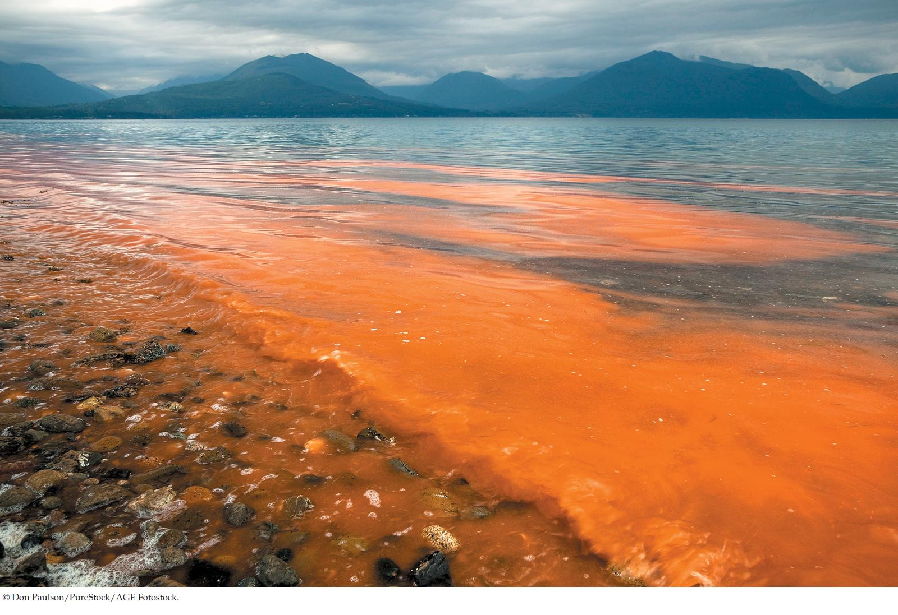

| 20 | The Origin and Diversification of Eukaryotes |
|

Blooms of dinoflagellates can cause toxic red tides, such as this one in Puget Sound in the U.S. state of Washington.
|
In summer 2005, a devastating red tide crippled the shellfish industry along the Atlantic coast of North America from Canada to Massachusetts. This red tide was produced by a bloom of dinoflagellates of the genus Alexandrium. These protists produce a powerful toxin that accumulates in clams, mussels, and oysters. A person who eats a mollusk contaminated with the toxin can experience a syndrome known as paralytic shellfish poisoning. Many people were sickened by eating mollusks that were harvested before the problem was diagnosed, and losses to the shellfish industry in 2005 were estimated at $50 million.
Several species of dinoflagellates produce toxic red tides in many parts of the world. Along the Gulf of Mexico, red tides caused by dinoflagellates of the genus Karenia produce a neurotoxin that affects the central nervous systems of fish, which become paralyzed and cannot respire effectively. Huge numbers of dead fish wash up on Gulf Coast beaches during a Karenia red tide. In addition, wave action can produce aerosols of the Karenia toxin, and these aerosols often cause asthma-like symptoms in humans on shore.
After the losses that resulted from the 2005 red tide, biologists at the Woods Hole Oceanographic Institution (WHOI) on Cape Cod began to monitor and model dinoflagellate populations off the New England coast. If biologists could accurately forecast future blooms, people in the area could be made aware of the problem in advance and adjust the shellfish harvest (and their eating habits) accordingly.
Biologists from WHOI monitored counts of dinoflagellates in the water and in seafloor sediments. They also monitored river runoff, water currents, water temperature and salinity, winds, and tides. An additional environmental factor was the “nor’easter” storms common along the New England coast. By correlating their measurements of these environmental factors with dinoflagellate counts, biologists produced a model that predicted growth of dinoflagellate populations.
In spring 2008, the WHOI team determined that all the factors were in place to produce another red tide like the one of 2005—if a nor’easter occurred to blow the dinoflagellates toward the coast. A nor’easter did occur at just the wrong time, and another red tide materialized in summer 2008, just as predicted. But this time, people were warned. Shellfish harvesters adjusted their harvest, and many fewer people were harmed by eating toxic mollusks.
Red tides are harmful, but can dinoflagellates also be beneficial to marine ecosystems?